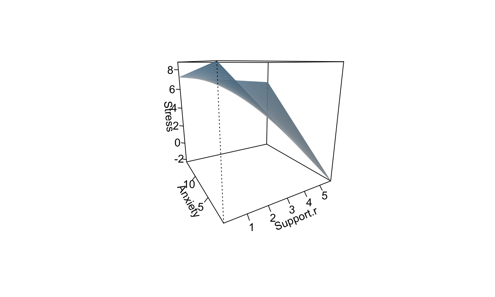
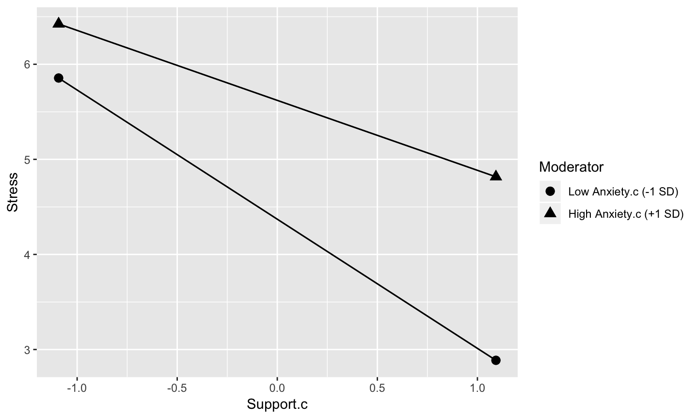
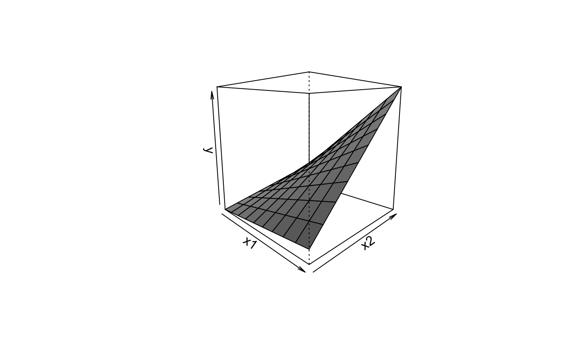
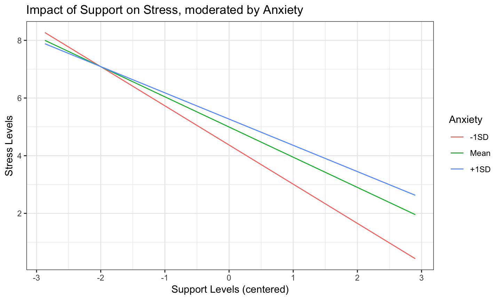
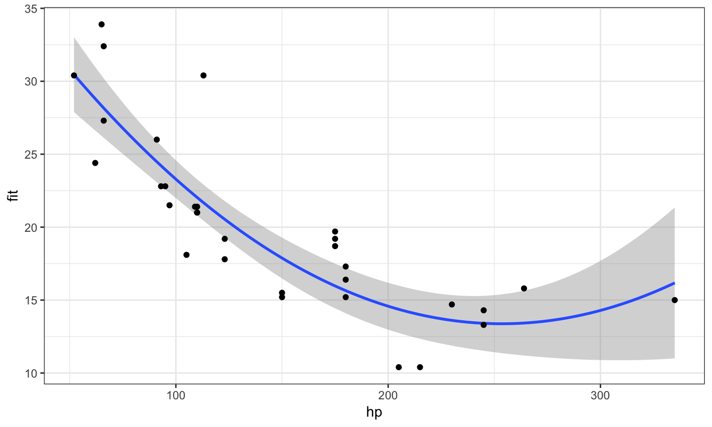
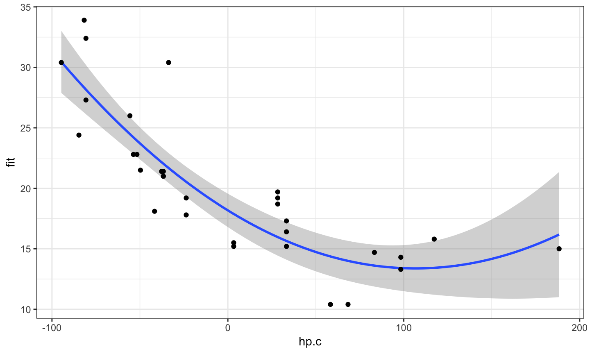

- When the effect of one predictor depends on the levels of another
What are interactions?
Example
- Y is a measure of health problems that we are predicting from measures of stress (X) and from social support (Z)
- Suppose the relationship between stress and health depends on the level of social support
- This would be an interaction – the relationship between one predictor (stress) and the outcome (health) varies as a function of another predictor (social support).
How can we visualize this association?

\[ \hat{Y} = b_{0} + b_{1}X + b_{2}Z + b_{3}XZ \]

How can we visualize this association?
- 2d?

Outline
- interpretation
- centering
- plotting
\[ \hat{Y} = b_{0} + b_{1}X + b_{2}Z + b_{3}XZ \]
- main effects and interaction effects
- lower order terms and higher order term
- higher order/interaction terms are created through multiplication
moderator variables
\[ \hat{Y} = b_{0} + b_{1}X + b_{2}Z + b_{3}XZ \] \(\hat{Y} = b_{0} + b_{1}X\) at different levels of Z
\(\hat{Y} = b_{0} + b_{1}Z\) at different levels of X

interpretation
With an interaction term, the main effects are now interpreted as regression of Y on X when Z = 0.
called conditional effects
\[ \hat{Y} = b_{0} + b_{1}X + b_{2}Z + b_{3}XZ \]
Need to get rid of the other X in the model, having z at zero is the only way to meaningfully interpert
0 is often meaningless in social science work
centering
- “de-mean” your variable to 0
- remember, a linear transformation does not change association
- only changes interpretation (i.e. average value) for some coefficients
#dataset$X.c <- scale(dataset$X, center = TRUE, scale = FALSE)
centering
without interactions, what changes if we center?
with interactios, what changes if we center?
interpret regression coeffificents
- simple linear regression
- dummy codes/effect codes
- multiple regression
- interactions (conditional effects)
plotting helps us interpret the association
- we could plot 3d, but that works best when you have 2 variables
- simpler to plot to 2d relationship
- plot “simple slopes” at different values of moderator
- typically a small, medium and large value
- plus minus SD, clinicial cutoffs, meaningful divisions (degrees)

simple slopes with no interaction term
- what is the equation for Y on X at differnt levels of Z?
\[ \hat{Y} = b_{0} + b_{1}X + b_{2}Z \]
\[ \hat{Y} = (b_{0} + b_{2}Z) + b_{1}X \]
\[ \hat{Y} = (1.2 + .3Z) + .6X \] \(\hat{Y} = 1.8 + .6X\) @ Z = 2
\(\hat{Y} = 1.2 + .6X\) @ Z = 0
\(\hat{Y} = .8 + .6X\) @ Z = -2
simple slopes with interaction term
\[ \hat{Y} = b_{0} + b_{1}X + b_{2}Z + b_{3}XZ \]
\[ \hat{Y} = (b_{0} + b_{2}Z) + (b_{1} + b_{3}Z)X \]
simple slopes with interaction term
\[ \hat{Y} = 1.2 + .6X + .3Z + .15XZ \] \[ \hat{Y} = (b_{0} + b_{2}Z) + (b_{1} + b_{3}Z)X \]
\[ \hat{Y} = (1.2 + .3Z) + (.6 + .15Z)X \] \(\hat{Y} = .3 + .15X\) @ -3
\(\hat{Y} = 1.2 + .6X\) @ 0
\(\hat{Y} = 2.1 + 1.05X\) @ 3
To interpret output, you need to look at graphs
- a priori hypotheses not always correct
- form of interaction meaningful in addition to whether there is an interaction
- cannot easily tell by just looking at coefficients
- simple slopes analyses can yeild additional hypothesis tests
errata
- covariates?
- do you need to center these?
- standardizing variables
- must compute yourself!!!
- reason is the interaction term is the cross product of standardized scores, not the standardized cross product
- group variables?
nominal variables and interactions
- How is GPA related to starting salary for Engineering, Business and Psych majors?
\[ \hat{Y} = b_{0} + b_{1}D_{1} + b_{2}D_{2} + b_{3}GPA \]
contr.treatment(3)
## 2 3 ## 1 0 0 ## 2 1 0 ## 3 0 1
## psych = 1, business = 2 engineering = 3
- what does this graph look like?
nominal variables and interactions
\[ \hat{Y} = b_{0} + b_{1}D_{1} + b_{2}D_{2} + b_{3}GPA + b_{4}(D_{1} * GPA) + b_{5}(D_{2} * GPA)\]
- how do I interpret these terms?
- what would this graph look like?
nominal variables and interactions
\[ \hat{Y} = b_{0} + b_{1}D_{1} + b_{2}D_{2} + b_{3}GPA + b_{4}(D_{1} * GPA) + b_{5}(D_{2} * GPA) \]
- what are the simple regression equations for each group?
psych: \(\hat{Y} = b_{0} + b_{3}GPA\)
business: \(\hat{Y} = (b_{0} + b_{1}) + (b_{3} + b_{4})GPA\)
engineering: \(\hat{Y} = (b_{0} + b_{2}) + (b_{3} + b_{5})GPA\)
simple slopes tests
- what if i wanted the simple slope of business?
- what if i wanted to test whether the slopes of buisness and engineering were different?
- what if I wanted to test the slope to the grand mean rather than to psych? what coefficients change (and what stay the same) in this case?
2-way and higher order interactions
\[ \hat{Y} = b_{0} + b_{1}X + b_{2}Z + b_{3}W + b_{4}XZ + b_{5}XW + b_{6}ZW + b_{7}XZW \]
4 way?
\[ \hat{Y} = b_{0} + b_{1}X + b_{2}Z + b_{3}W + b_{4}Q + b_{5}XW + b_{6}ZW + b_{7}XZ + b_{8}QX\] \[+ b_{9}QZ + b_{10}QW + b_{11}XZQ + b_{12}XZW + b_{13}XWQ + b_{14}ZWQ + b_{15}XZWQ \]

if you must 3-way
- easier to do with a nominal moderating variable
- e.g., old vs young, tx vs control
- then you graph 2 2-way interactions to interpret
post hoc analyses
- are the simple slopes different from 0?
- is a pair of simple slopes different from one another?
- what is the magnitude of the interaction?
are the simple slopes different from 0?
Remember that the slope at any particular value is a combination of both b1 and b3 \[ \hat{Y} = (b_{0} + b_{2}Z) + (b_{1} + b_{3}Z)X \] \[ se_{b@z} = \sqrt{se_{b1}^2 + (2 * Z * cov_{b1b3})+ (Z^2 se_{b3}^2)}\] - covariance is for the coefficients
library(broom) tidy(vcov(mr.model.c))
## Warning: 'tidy.matrix' is deprecated.
## See help("Deprecated")
## # A tibble: 4 x 5 ## .rownames X.Intercept. Support.c Anxiety.c Support.c.Anxiety.c ## <chr> <dbl> <dbl> <dbl> <dbl> ## 1 (Intercept) 0.0215 -0.00310 0.0000883 -0.00227 ## 2 Support.c -0.00310 0.0247 -0.00531 0.00211 ## 3 Anxiety.c 0.0000883 -0.00531 0.00421 -0.0000600 ## 4 Support.c:Anxiety.c -0.00227 0.00211 -0.0000600 0.00154
are the simple slopes different from 0?
\[ \hat{Y} = (b_{0} + b_{2}Z) + (b_{1} + b_{3}Z)X \] \[ t = \frac{(b_{1} + b_{3}Z)}{se_{b@z}}\] df = n-p-1
Do the slopes of a pair of simple slopes differ from one another?
- The interaction tests whether the slope 1 SD above differs from 1 SD below
- What about for categorical predictors?
what is the magnitude of the interaction?
graphing
- predict and do by hand
- pequod
- sjPlot
- jtools
- AMPSS shiny app, others..
library(pequod) int.model <- lmres(Stress ~ Support.c* Anxiety.c, data = Multipleregression) slope.1 <- simpleSlope(int.model, pred="Support.c", mod1="Anxiety.c") PlotSlope(slope.1)

library(sjPlot)
sjp.int(mr.model.c,
type = "eff",
mdrt.values = "meansd",
swap.pred = TRUE)
support.c.values <- range(Multipleregression$Support.c) anxiety.c.values <- c(-sd(Multipleregression$Anxiety.c), 0, sd(Multipleregression$Support.c)) plot.data <- expand.grid(Support.c = support.c.values, Anxiety.c = anxiety.c.values) plot.data
## Support.c Anxiety.c ## 1 -2.869767 -2.487176 ## 2 2.902433 -2.487176 ## 3 -2.869767 0.000000 ## 4 2.902433 0.000000 ## 5 -2.869767 1.092455 ## 6 2.902433 1.092455
plot.data$Stress <- predict(mr.model.c, newdata=plot.data)
plot.data$Anxiety.c <- factor(plot.data$Anxiety.c, labels = c("-1SD", "Mean", "+1SD"))
plot.data
## Support.c Anxiety.c Stress ## 1 -2.869767 -1SD 8.270609 ## 2 2.902433 -1SD 0.426959 ## 3 -2.869767 Mean 8.001637 ## 4 2.902433 Mean 1.955738 ## 5 -2.869767 +1SD 7.883496 ## 6 2.902433 +1SD 2.627232

library(jtools)
marginal effects, Johnson-Neyman, etc
errata mark II
- non linear associations can masquerade as interactions
- should test whether polynomial interactions serve as a more simplistic explanation
polynomial regression
- Linear lines often make bad predictions
- Some relationships are not linear (weight and height across lifespan)
- Sort of poor to model non linear data but useful to kno
polynomial regression
- contain a series of higher order function for a single variable
Linear \(\hat{Y} = b_{0} + b_{1}X\)
Quadratic \(\hat{Y} = b_{0} + b_{1}X + b_{2}X^2\)
Cubic \(\hat{Y} = b_{0} + b_{1}X + b_{2}X^2 + b_{3}X^3\)

library(broom) tidy(quad)
## # A tibble: 3 x 5 ## term estimate std.error statistic p.value ## <chr> <dbl> <dbl> <dbl> <dbl> ## 1 (Intercept) 40.4 2.74 14.7 5.23e-15 ## 2 hp -0.213 0.0349 -6.11 1.16e- 6 ## 3 I(hp^2) 0.000421 0.0000984 4.27 1.89e- 4
when to fit?
- theory
- scatter plots
- residual plot
- safeguard
interpretation of coefficients
- intercept is predicted value when x = 0
- The b1 coefficient is the tangent to the curve when X=0. + rate of change when x = 0
- thus important to center
mtcars2$hp.c <- scale(mtcars2$hp, center = TRUE, scale = FALSE) mtcars2$hp.c <- as.numeric(mtcars2$hp.c) quad.c <- lm(mpg ~ hp.c + I(hp.c^2), data = mtcars2) tidy(quad.c)
## # A tibble: 3 x 5 ## term estimate std.error statistic p.value ## <chr> <dbl> <dbl> <dbl> <dbl> ## 1 (Intercept) 18.2 0.705 25.8 1.53e-21 ## 2 hp.c -0.0899 0.00952 -9.44 2.39e-10 ## 3 I(hp.c^2) 0.000421 0.0000984 4.27 1.89e- 4

- The b2 coefficient is the acceleration
- More specifically, 2*b2 is the acceleration – the rate of change in b1 for a 1-unit change in X
b1+2*b2X = slope of tangent line at a particular value of X
-0.0898514747 + 2*0.0004208156*106.75
## [1] -7.3441e-06
-0.0898514747 + 2*0.0004208156*180
## [1] 0.06164214